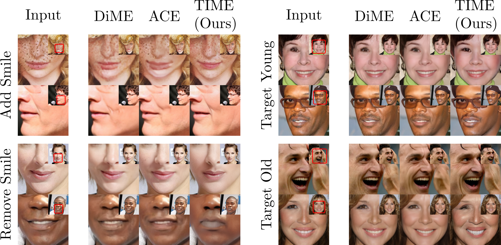

Links
TL;DR
We propose using Stable Diffusion as a recourse for black-box counterfactual explanations - e.g. using only the input and output of the model. Firstly, our method distills the prediction of the classifier as text-tokens and then modifies the image using inversion techniques.
Abstract
This paper addresses the challenge of generating Counterfactual Explanations (CEs), involving the identification and modification of the fewest necessary features to alter a classifier's prediction for a given image. Our proposed method, Text-to-Image Models for Counterfactual Explanations (TIME), is a black-box counterfactual technique based on distillation. Unlike previous methods, this approach requires solely the image and its prediction, omitting the need for the classifier's structure, parameters, or gradients. Before generating the counterfactuals, TIME introduces two distinct biases into Stable Diffusion in the form of textual embeddings: the context bias, associated with the image's structure, and the class bias, linked to class-specific features learned by the target classifier. After learning these biases, we find the optimal latent code applying the classifier's predicted class token and regenerate the image using the target embedding as conditioning, producing the counterfactual explanation. Extensive empirical studies validate that TIME can generate explanations of comparable effectiveness even when operating within a black-box setting.
Pipeline

TIME vs ACE vs DiME
TIME generate realistic counterfactuals even when it is black-box.
Citation
@InProceedings{Jeanneret_2024_WACV,
title = {Text-to-Image Models for Counterfactual Explanations: a Black-Box Approach},
author = {Guillaume Jeanneret and Lo\"ic Simon and Fr\'ed\'eric Jurie},
booktitle = {Proceedings of the IEEE/CVF Winter Conference on Applications of Computer Vision (WACV)},
month = {January},
year = {2024}
}